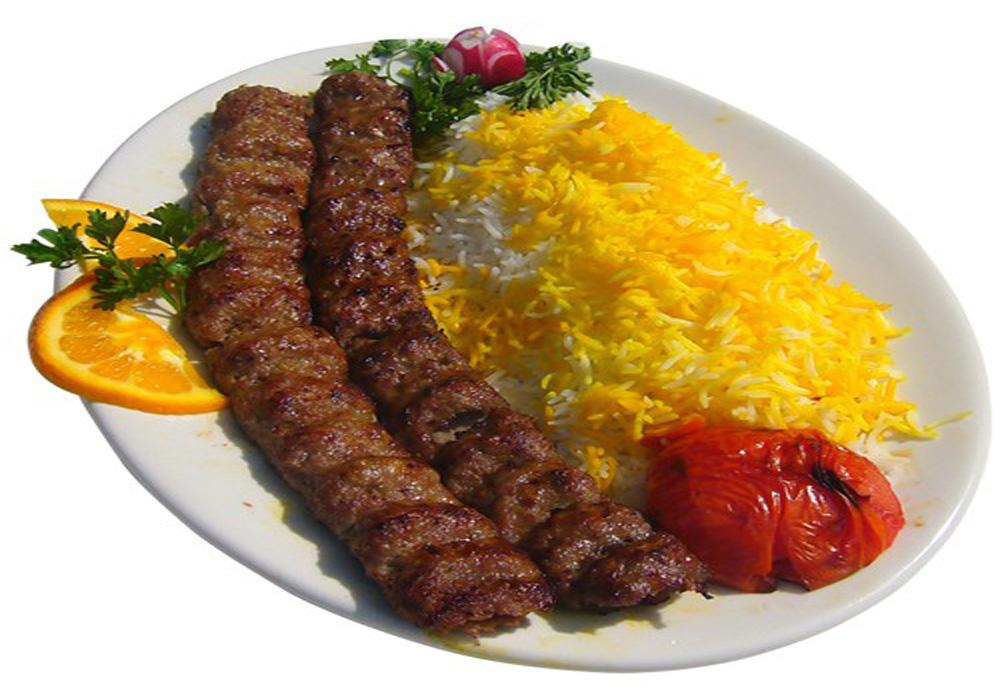

 Lamb or beef (precisely 20% fat, 80% meat) is minced twice for finer consistency. Salt, garlic powder, black pepper, celery powder, sumac, very finely grated onion (the extra juice is squeezed out and saved for later) and one egg yolk per pound of meat are added. All ingredients are mixed, covered, and left to marinate in the refrigerator for at least four hours or overnight. Kabab koobideh is grilled on skewers, traditionally over hot coals, and is served with polo (Iranian rice pilaf with oil, salt and saffron), accompanied by grilled tomatoes and onions. Sumac is usually served as a tableside garnishing spice. Chicken kabab koobideh is made using chives or green onions, parsley, salt and pepper–no turmeric and no sumac. It is served over baghali polo